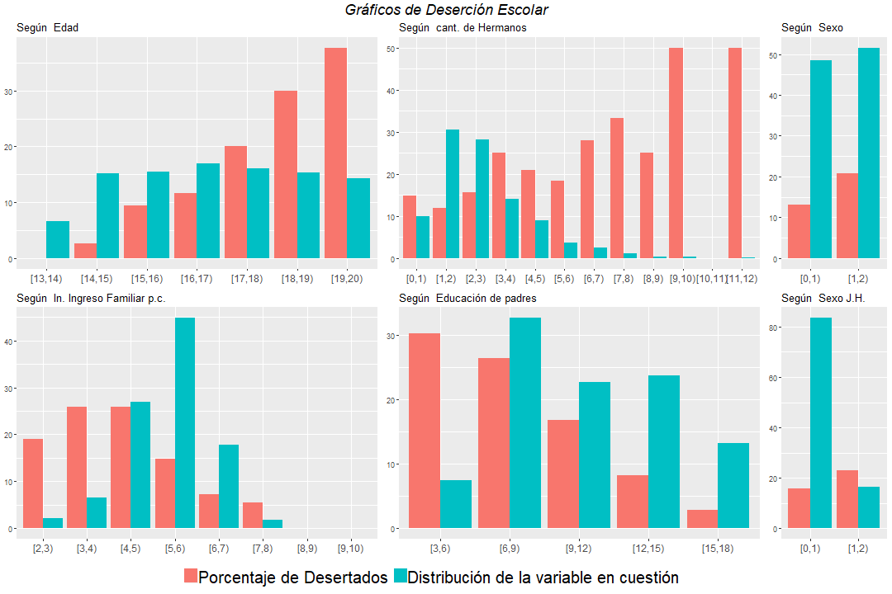
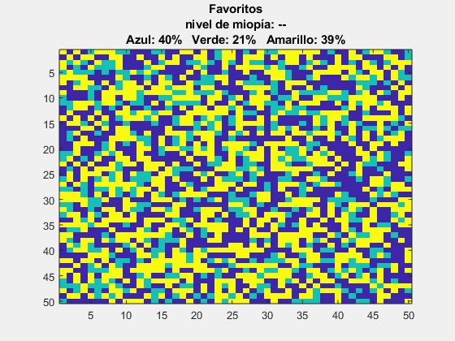
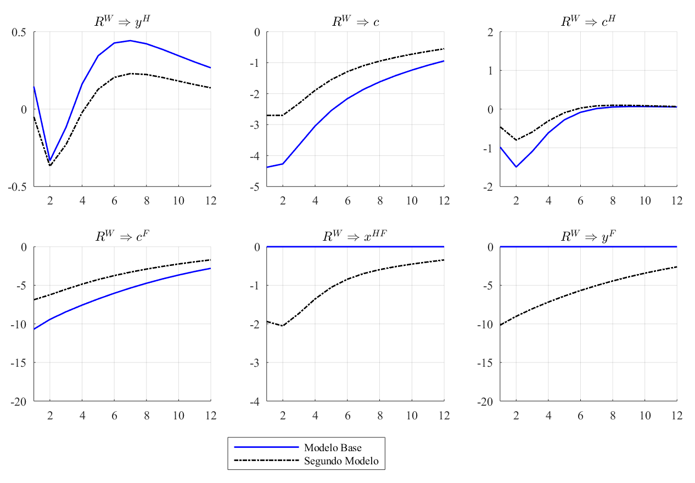

I have a strong proficiency in R, particularly for econometrics
and data analysis. During my studies in economics, I became
devoted to R, using it extensively for various projects. My
experience includes data entry, manipulation, and visualization.
Automating Fiscal Data Extraction
Argentinian fiscal data is not as easy to obtain as I would like.
The Ministry of Economy provides a
web page
where you can download an Excel file with the
Savings-Investment-Financing account for a given month. I was
particularly interested in the values of amortizations, debt
variations, and financial results, monthly from 2005 to 2019.
Manually extracting this data would be time-consuming and require
a lot of patience.
Fortunately, this code automates the process. It accesses the
given URL, navigates through the messy Excel files, and extracts
the desired data efficiently.
Transforming Survey Data for Predictive Modeling
I participated in a project for the Centro de Estudios para el
Desarrollo Humano (CEDH) at UdeSA, where we utilized the
MISC survey from UNICEF
MISC survey from UNICEF for Argentina. This survey provides a
comprehensive dataset on households and individuals, covering a
wide range of variables such as education, economic status,
health, beliefs, and exposure to violence. The main goal of the
project was to use this data to build predictive models for key
variables, including domestic violence, school dropout, and
teenage pregnancy.
Before diving into the predictive modeling, we needed to transform
the raw dataset into a more comprehensive and operable format.
This code fragment demonstrates how, with a precise understanding
of the survey, it is possible to construct the number of repeated
school years for each child.
Automating Data Visualization
The power of R and the ggplot2 package to create beautiful plots
is well known, and this example showcases that capability.
However, the primary reason I chose this code is its ability to
produce multiple plots systematically. Often, we need to generate
numerous plots to better understand the variables and have a wider
set of candidate plots for the final document. This code utilizes
R's lists, loops, and the ggplot2 package to efficiently create
many plots that relate different variables.

run cool code
Data Visualization. Others examples
STATA is a powerful tool for data analysis, and I have utilized it
extensively for various projects. Although STATA is not my
software of choice, it provides simple code and satisfactory
results. Below, you can find examples of my work with STATA,
including a time series analysis and other data manipulation
tasks.
Example of Loops, Macro Variables, and Plots
I am proficient in using loops, macro variables, and creating
plots in STATA. Below, you can see a code example that
demonstrates these skills in action.
A Time Series Example
Although STATA is not my preferred software for time series
analysis, it offers simple code and produces satisfactory results.
Below, you can find a small code example that demonstrates a
univariate model.
MATLAB is fun, but now I prefer Julia.
Simulating a Complex System
Complex systems were initially introduced as a mathematical
curiosity, but they have since proven to be fundamental in
understanding various processes in physics, biology, and social
behavior. When dealing with complex systems, we often cannot
arrive at a closed-form solution. Therefore, questions like: "Does
the process converge to a stationary equilibrium? When does it?
What are the equilibrium properties?" require simulations.
The code presented here uses MATLAB to perform these simulations.
The simulations model voting patterns, where voters are placed in
a two-dimensional matrix. Each voter must choose among three
parties, and voters are heterogeneous in their preferences. Every
voter has a preferred party, a 'not so bad' party, and a 'hated'
party. Before voting, voters can conduct small polls among their
neighbors to estimate the probability of each party winning. In
summary, the neighborhood influences the expectations of each
household. If a household expects that their favorite party will
come last, they change their voting intention to their second-best
option.
Up to this point, the model itself is not 'complex.' However,
after every voter updates their voting intention, they can conduct
a new survey. Different voting intentions lead to different voting
expectations, which again lead to different voting intentions.
This iterative process adds complexity to the model.
The image below summarizes the model's concept, where each color
represents a party and each frame shows the voting intention after
another neighborhood poll. The matrix size is reduced for
illustrative purposes and represents a specific parameterization.

Dynare
I used Dynare to compute the Impulse Response Functions (IRFs) in
response to shocks over the steady state (ss) of a Dynamic
Stochastic General Equilibrium (DSGE) models. This tool allows to
analyze the effects of various economic shocks on a model's
variables, providing valuable insights into the dynamic behavior
of the modeled economy.

Julia has become an essential tool when dealing with complex
macroeconomic model. I love its intuitive and simple syntax and
powerful capabilities.
Value Function Interation: The cake eating problem
Julia's integration with Jupyter Notebook and Jupyter Lab is
excellent for the early stages of code development, especially
when working with mathematical models. This example showcases a
notebook explaining Value Function Iteration (VFI) in Julia using
a simple problem known as the cake-eating problem. I used this
notebook to teach VFI in Recursive Macroeconomics while serving as
a Teaching Assistant for the Master's in Economics program at
Universidad de San Andrés.
Heterogeneous Agent Models
Julia's beautiful syntax is excellent for translating mathematical
models into code. These two Jupyter Notebooks explain
heterogeneous agent models using Julia. The first notebook
presents a simple model based on Heer & Maussner (2009). In the
second notebook, I introduced a second idiosyncratic shock to the
firms' Total Productivity Factor.
Inflation and Risk on Households Investment Decisions
This model quantifies the steady-state effects of inflation on the
risk of households' investment decisions. In a small open economy,
using a heterogeneous agent New Keynesian (HANK) model, a risky
asset, capital, and a risk-free asset, bonds, are introduced. The
return of capital is modeled through a variant of Calvo-pricing,
linking the risk in the returns to inflation. The results indicate
that including the effect of inflation over the risk on capital
leads to a portfolio reallocation among households, decreasing the
stock of capital and increasing the stock of safe assets. This
reallocation implies a decrease in steady-state production.
TikZ
During my time as a research assistant, I mastered the use of TikZ
within LaTeX to create beautiful and precise plots. TikZ is a
powerful tool for producing high-quality graphics, allowing for
intricate and customizable visualizations. Below, you can find
examples of my work with TikZ, showcasing its capabilities in
creating elegant and informative plots.